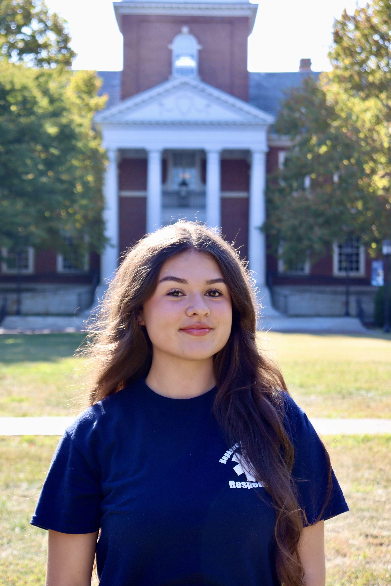
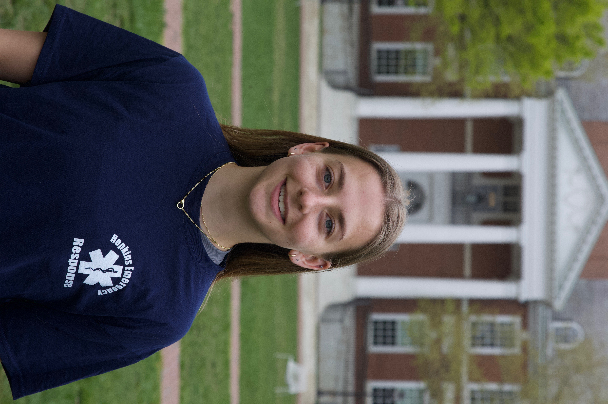
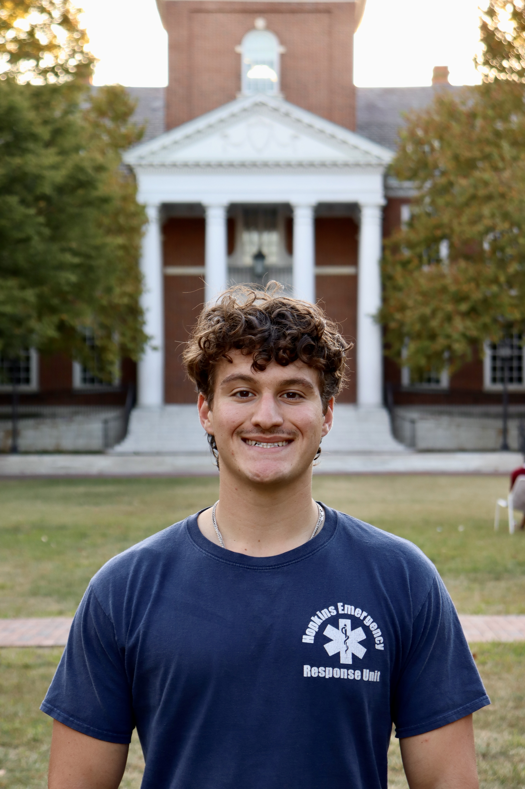
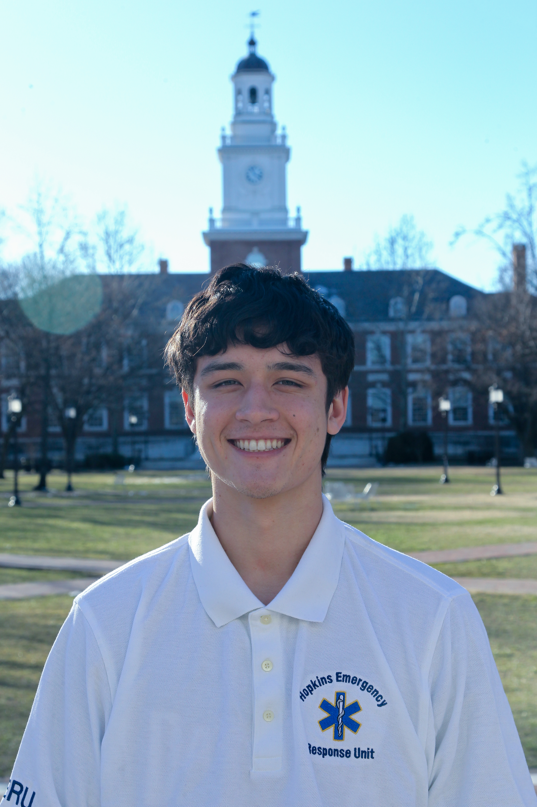
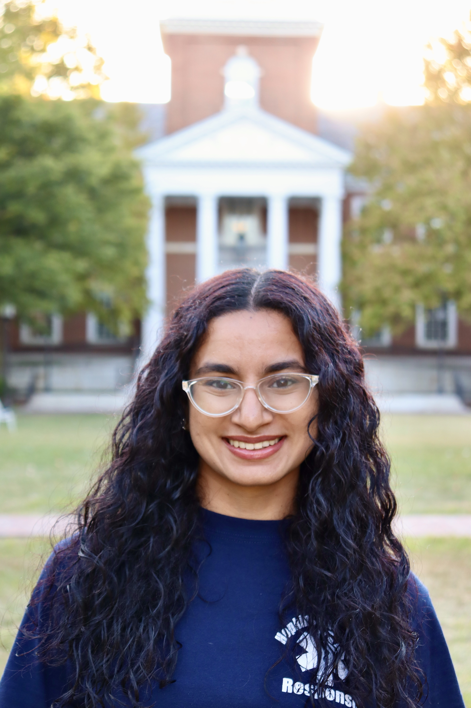
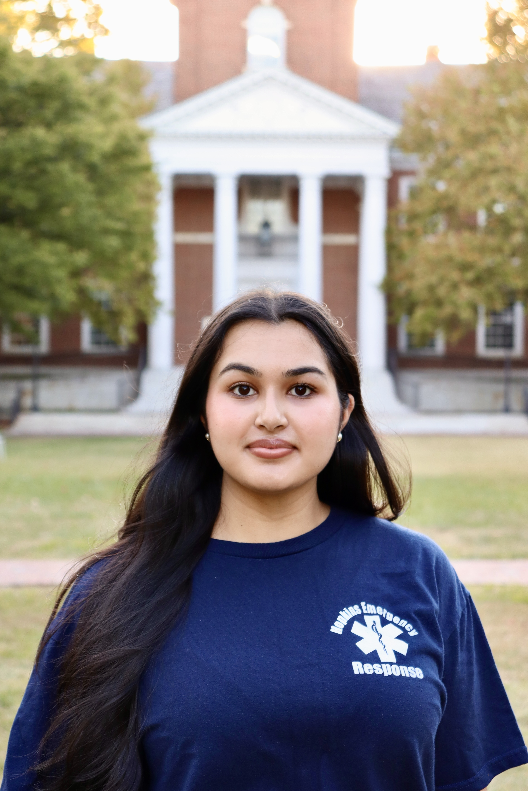

Meet the Board

Olivia Zhang
EmailOlivia Zhang is honored to be serving as the Captain for 2026. Olivia is from Toronto, Canada majoring in Neuroscience (Class of 2027). She joined HERO her freshman year as a non-prior EMT. As Captain, Olivia helps oversee the operations of HERO. Outside of HERO, Olivia is a firefighter/EMT at the Jacksonville Volunteer Fire Company, does research on cerebrospinal fluid, and works at the rec. In her free time, she enjoys baking and spending time with her friends.

Nadia Almasri
EmailNadia is from Fresno, California and is majoring in Molecular & Cell Biology and Spanish (JHU '27). She joined HERO as a non-prior her freshman year. As President, Nadia helps lead BOD and connects with HERO admin. Outside of HERO, Nadia volunteers as a reproductive health educator with the Violet Project, tutors every subject she can in PILOT, and works in an immunology lab.

Bethania Robertson
EmailBethania is from Berkshire County, Massachusetts who is majoring is Biomedical Engineering and Molecular and Cellular Biology (JHU '27). She joined HERO as a non prior EMT in her sophomore spring. As Personnel Lieutenant, Bethania manages HERO logistics, schedules unit shifts, and helps coordinate standby events. She previously served as CPR coordinator and is still an active CPR instructor. In her free time, she enjoys playing basketball on the women's club team, cooking and playing the ukulele.

Lia Melvin
EmailLia is from Joppa, Maryland. She is majoring in Behavioral Biology with a Psychology minor. Lia joined HERO as a non-prior EMT in her freshman year (JHU '27). As EMS Lieutenant, she oversees promotions within the unit and also assists with onboarding probationary members. Outside of HERO, Lia plays tennis on the JHU women's tennis team. In her free time, she enjoys reading, hiking, and hanging out with friends.

Justin Blumenthal
EmailJustin is from Deerfield, Illinois. He is majoring in Molecular and Cellular Biology. Justin joined HERO as a non-prior EMT in his sophomore year (JHU '27). As Equipment Officer, he maintains HERO's inventory and our squad room. Outside of HERO, Justin works as an event EMT at large festivals, plays club soccer, and conducts dermatology research. In his free time, he enjoys working out and listening to live music.

Josh Russman
EmailJosh is from Cleveland, Ohio and is majoring in Molecular and Cellular Biology (JHU '27). He joined HERO as a non prior EMT his sophomore spring. Outside of HERO, he's involved in outside EMS, research, and volunteering. In his free time he enjoys baking, skiing, and golfing.

Grant Dahl
EmailGrant is from St. Louis, Missouri and is majoring in Neuroscience (JHU '27). He joined HERO as a non prior EMT in his freshman spring. As Training Officer, Grant helps train new HERO members to earn their EMT certification and ensures that members' skills remain sharp. Outside of HERO, Grant enjoys whitewater kayaking, singing in his a cappella group, and playing sports.

Clayton Tomlinson
EmailClay is from Hunterdon County, New Jersey and is majoring in Molecular and Cellular Biology (JHU '27). He joined HERO as a prior EMT in his freshman year. As the Continued Education Officer, Clay leads weekly trainings, ensures skill competencies, and helps members grow through realistic mock calls. He has previously served as a Personnel Lieutenant and a selections officer. Outside of HERO, Clay is a climbing instructor in Outdoor Pursuits and a camp counselor for Camp Kesem. In his free time, he enjoys reading, climbing, and volunteering with White Marsh Volunteer Fire Department.

Arushi Sharma
EmailArushi is from Calgary, Canada and is majoring in Public Health and Natural Sciences (JHU '27). She joined HERO as a non-prior EMT her sophomore year. As Secretary, Arushi helps document unit meetings and assists with community and alumni outreach. Outside of HERO, Arushi is involved with Hopkins Community Connection and the Center for Social Concern. In her free time, Arushi enjoys trying new restaurants, spending time with friends, and travelling.

Sophie Sitafalwalla
EmailSophie is from Johns Creek, Georgia and is majoring in Public Health with a minor in Anthropology. She joined HERO as a non-prior EMT in her freshman year. As Member-at-Large, she plans events and helps to bring the voice of all HERO members to the board. Outside of HERO, Sophie works with Greenhacks to help find innovative climate change solutions, works in a breast cancer research lab and volunteers with best buddies. In her free time, Sophie enjoys hanging out with friends, trying new restaurants, and cooking.